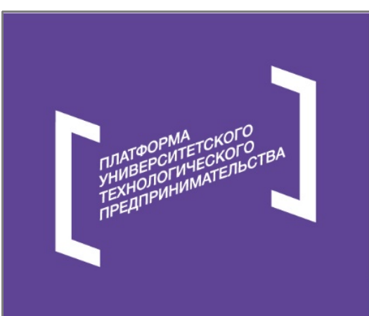
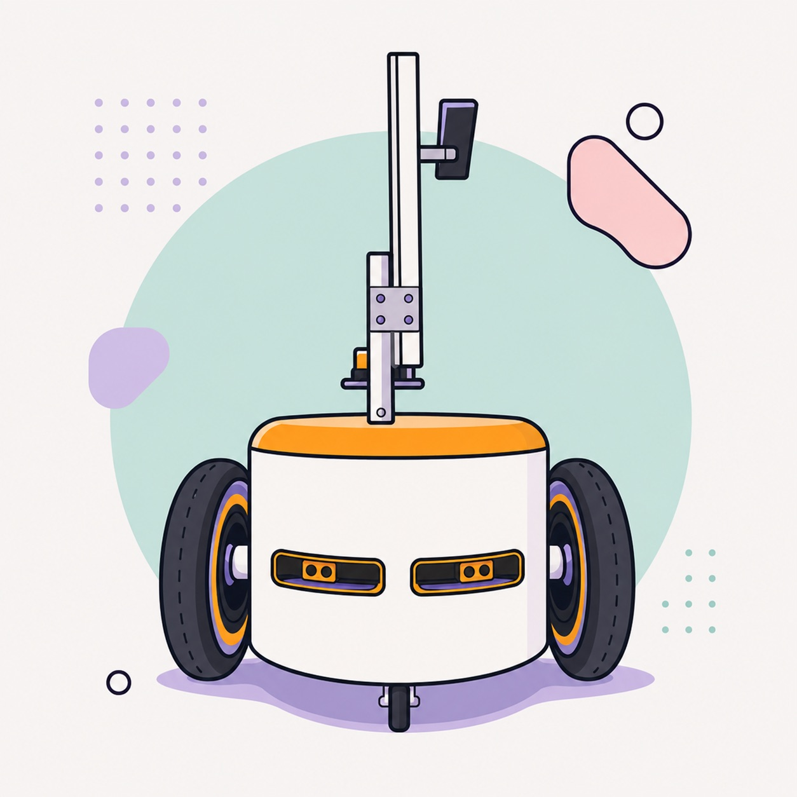
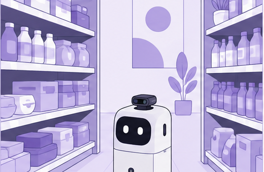
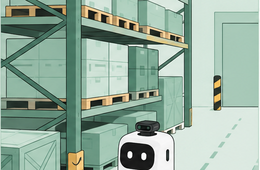
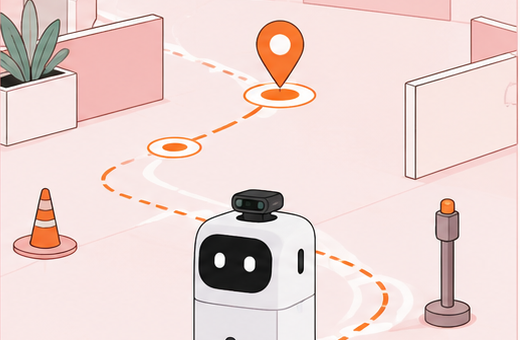
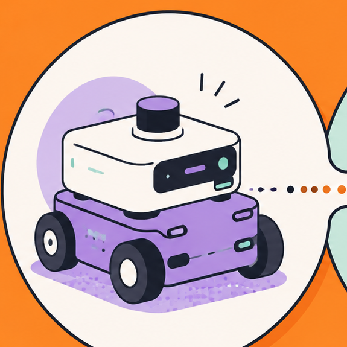
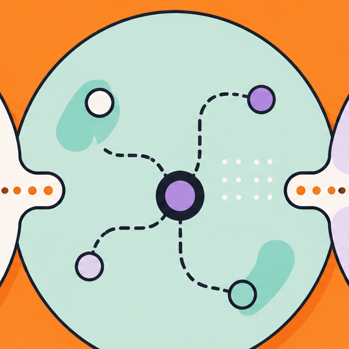
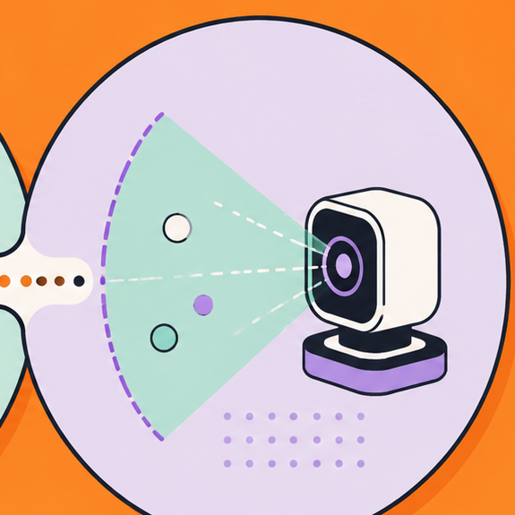
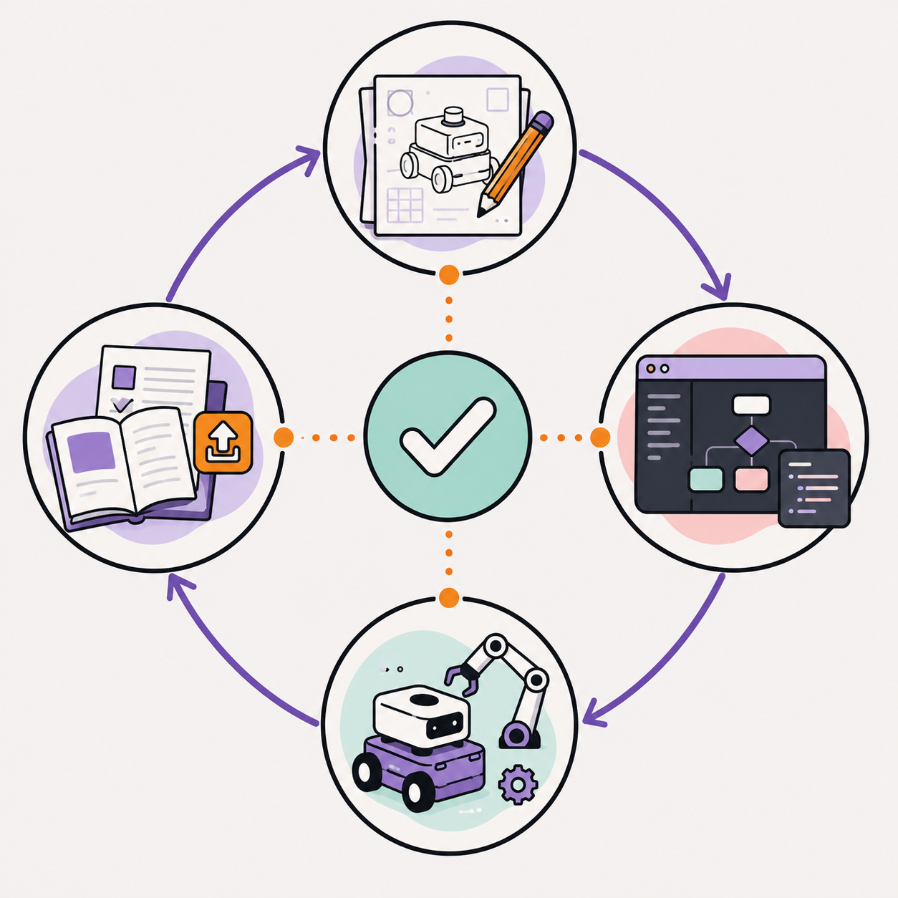

Ручные обходы
Проверка ценников и товарной информации требует повторяемых обходов и занимает время сотрудников.


Проект реализован при поддержке Фонда содействия инновациям в рамках программы «Студенческий стартап» мероприятия «Платформа университетского технологического предпринимательства» федерального проекта «Технологии».
Контроль товарной информации
Разрабатываем автономного мобильного робота-сканер для проверки ценников, штрих- и QR-кодов, а также сопутствующей товарной информации в торговых и складских помещениях.
Как работает решение
Задача
Ценники, штрих- и QR-коды, а также другая товарная информация требуют регулярной сверки с фактической обстановкой на полке. Проект направлен на автоматизацию повторяющихся контрольных обходов и подготовку данных для последующей проверки.
Проверка ценников и товарной информации требует повторяемых обходов и занимает время сотрудников.
Ценники, штрих- и QR-коды необходимо сопоставлять с фактическим состоянием полки.
Для торговых залов и складских помещений требуется учитывать маршрут и правила фиксации визуальной информации.
Сценарии
Платформа предназначена для повторяемого маршрута, сбора визуальной информации и подготовки данных для последующей проверки.

Проверка ценников, штрих- и QR-кодов, а также сопутствующей товарной информации на полках.

Проверка маркировки и сопутствующей визуальной информации в зонах хранения и комплектации.

В рамках пилота планируется проверить взаимодействие мобильной платформы, навигационного ПО и визуального модуля в условиях, приближенных к рабочим.
Продукт
Маршрут для проверки
Сбор информации о ценниках и кодах
Подготовка данных для последующей проверки
Состав функций и конфигурация уточняются в ходе разработки и пилотной проверки. На сайте публикуются только согласованные и подтвержденные материалы.
Система
В разрабатываемой системе объединяются мобильная платформа, программный контур маршрута и средства подготовки визуальной информации.

Колёсная база и модули, предназначенные для движения по маршруту в торговых и складских помещениях.

Программный контур для планирования маршрута и последовательности операций в рабочем пространстве.

Сбор и подготовка визуальной информации о ценниках, штрих- и QR-кодах.
Разработка
Работы второго этапа охватывают конструкторскую документацию, ПО управления, сборку и испытания, а также сайт проекта. Согласованные материалы будут публиковаться после проверки.

Проектирование платформы, состава модулей и документации для опытного образца.
Разработка программного контура маршрута и подготовки данных для проверки.
Планируются сборка опытного образца, проверка сценариев и фиксация результатов в протоколах.
Публичное описание разработки и публикация согласованных материалов по мере готовности.
Материалы проекта
Здесь будут доступны согласованные описания разработки, фото и видео, материалы испытаний и обновления по пилотной проверке. До публикации каждый материал проходит проверку на точность и отсутствие закрытых данных.
Схемы, описания модулей и безопасные для публикации фрагменты документации.
Согласованные демонстрационные материалы, описание версий и сценариев работы.
Протоколы, фото, видео и выводы после проверки исходных материалов.
Команда
Персональный состав и контакты публикуются только после согласования.
Конструкция и интеграция платформы
Навигационное и управляющее ПО
Пилотная проверка и подготовка материалов
Новости
На сайте опубликовано базовое описание продукта, статуса пилота и направлений разработки.
Контакты
Контактные данные ООО «Промышленные роботы и технологии» будут добавлены после подтверждения владельцев каналов и порядка обработки обращений.